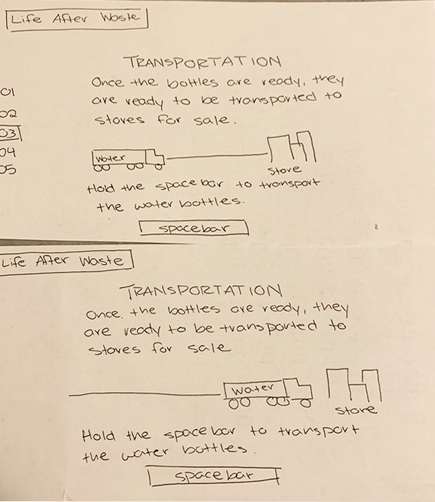
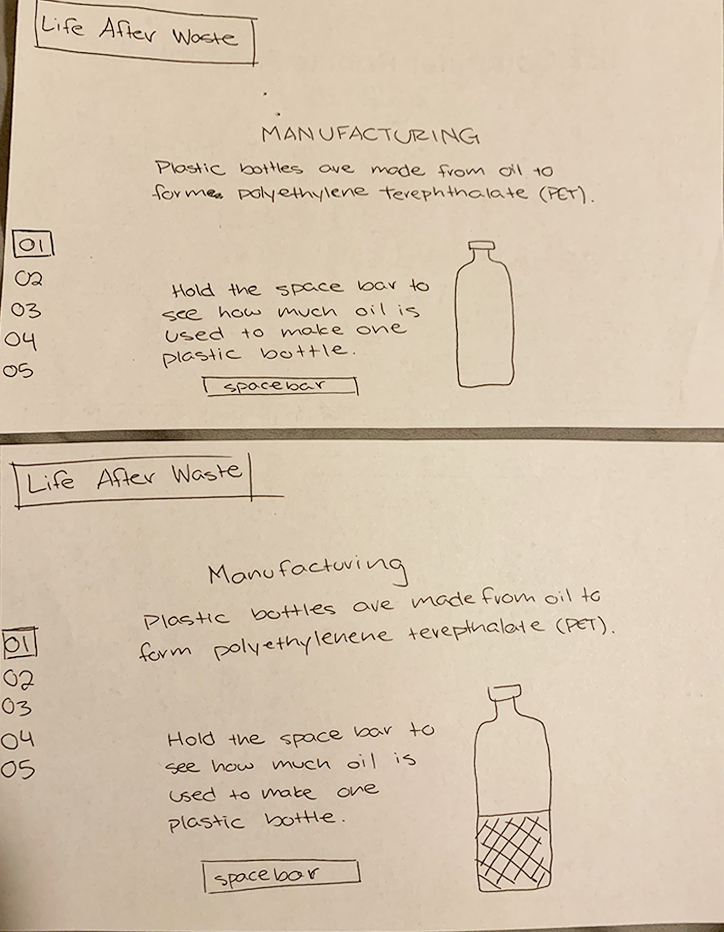
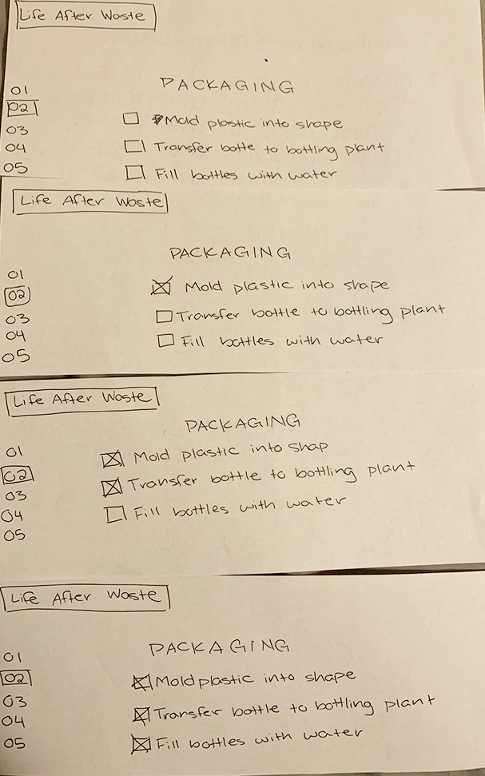
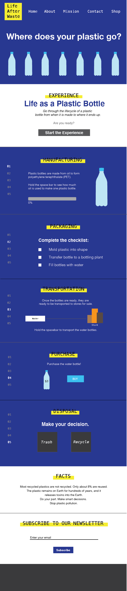
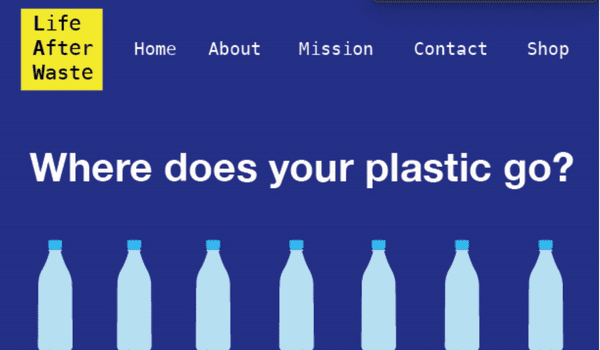

Project Type
Final Project for DES 112
Role
UX/UI Designer
Skills
User Research, Emotional Design, Prototypes, Wireframes, Usability Principles
Tools
Sketch, InVision
Timeline
Apr. 15 - May 6, 2019
(3 weeks)

Final Project for DES 112
UX/UI Designer
User Research, Emotional Design, Prototypes, Wireframes, Usability Principles
Sketch, InVision
Apr. 15 - May 6, 2019
(3 weeks)
This project was for my UX/UI course at UC Davis. The requirement was to design a desktop version of the front page for an informational website within your assigned category (health care, non-profit, political candidate, school or educational program or museum). My category was for a non-profit organization, so I chose to design my own organization called YA Cancer. When I was researching non-profits, I found very few organizations that targeted young adults who got cancer because the majority of it focused on adults or children. My idea was to create an organization that young adults and teens could go to for information, support, or guidance on how to cope with cancer.
There are limited resources for young adults who are diagnosed with cancer. Many are beginning their journey as an adult with a job or education, and they may need assistance in navigating through this battle in their life.
Create a webpage for a non-profit organization targeting young adults. It will provide stories from other young adults with cancer, news, events for the organization, and how to cope with cancer.
Since I was assigned non-profit organization, I proposed to create a webpage that provides research and support for young adults with cancer. It will assist young adults diagnosed with cancer by creating a place for them to go to in times of need. The website will include a section on stories from other cancer patients and survivors to share with others, and they can connect to these people for questions or comments. The webpage will also include a section on recent news and/or tips for cancer patients and their families to read. It will be a place where young adults can come to for
Target Audience: Male and female young adults (between the ages of 18-35) who have been diagnosed with any type of cancer
I looked at information on my topic to learn more about plastic pollution. It would also help me in adding statistics and facts in my website to help users learn. I looked at four sources of information: two TED Talks, an article on The Guardian, and a Buzzfeed video.
This TED Talk discusses the lifecycle of plastic from how it’s created to where it goes when it gets thrown away. It gave me valuable information on the effects of plastic in the world and where the plastic may end up depending on how humans dispose of it.
I created a persona for my target audience with Xtensio. The persona is on a student named Ethan who was recently diagnosed with cancer. He only has one year of college left, but he has to postpone his education for his treatment. This is potentially one of the audiences who will be looking at YA Cancer, so I have to consider his goals and needs when he is on the site.

To get a sense of the functionality, I created some quick paper prototypes to show some of the types of interactions the website would have. My idea was that I would create 5 events that taught users the lifecycle of plastic. In the protypes, I showed the "transportation," "manufacturing," and "packaging" sections where it would require the user to press the space bar or fill out a checklist.



I created this digital design with Sketch and Adobe Illustrator for the graphics. This was to design the entire design of my website. My idea was to create a scrollable page that would move onto the next section once the user has completely the previous section.

I used InVision to create a digital prototype of my interactive website. It would show the main elements that the user would be doing.

I was really surprised by how much I could do after learning JavaScript for 10 weeks. This project helped me think more critically in coding because JavaScript requires more problem solving than HTML and CSS, and I was able to build an entire website by myself that functions as I imagined. After finishing my final project, I got excited by the many possibilities I could do with design and developing. I want to challenge myself further in creating interactive websites to engage the user.
To further expand the website, I would include more microinteractions and transitions that guide the user from section to section. I would add a news section that would allow users to read updates on the topic, and I would like to add live statistics for the user to comprehend the impact.